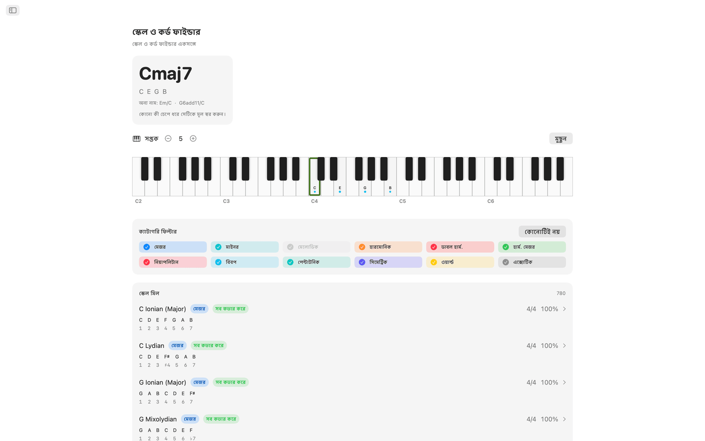
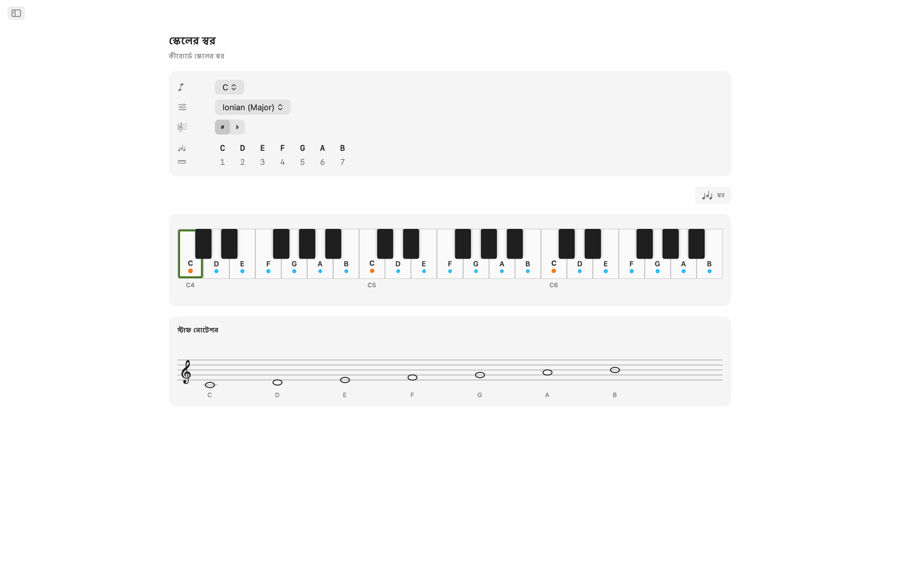
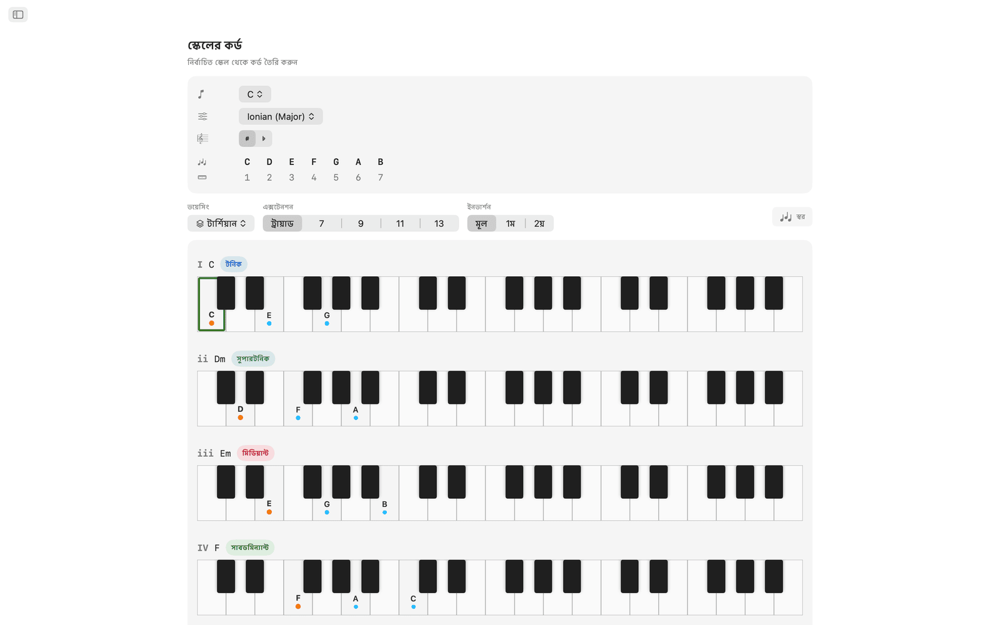
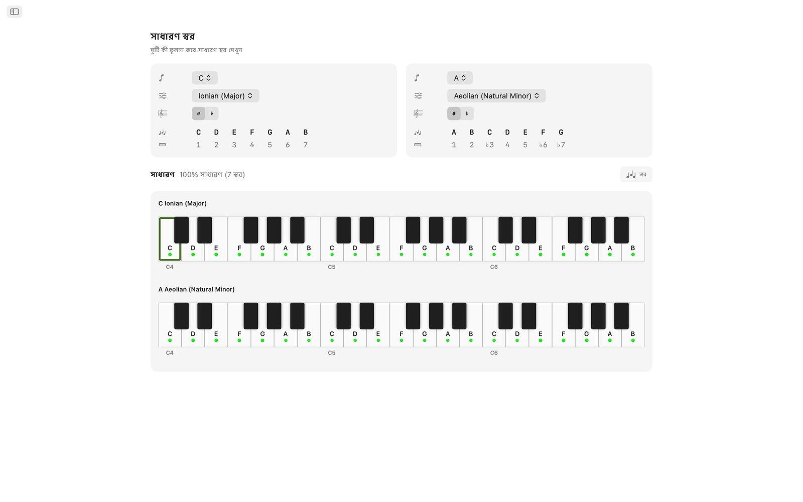
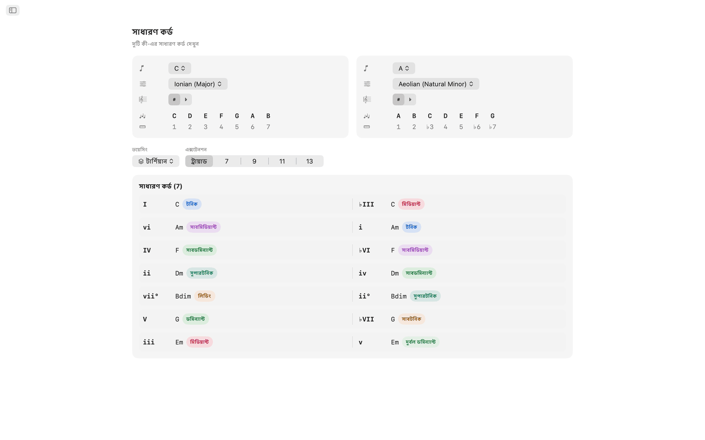
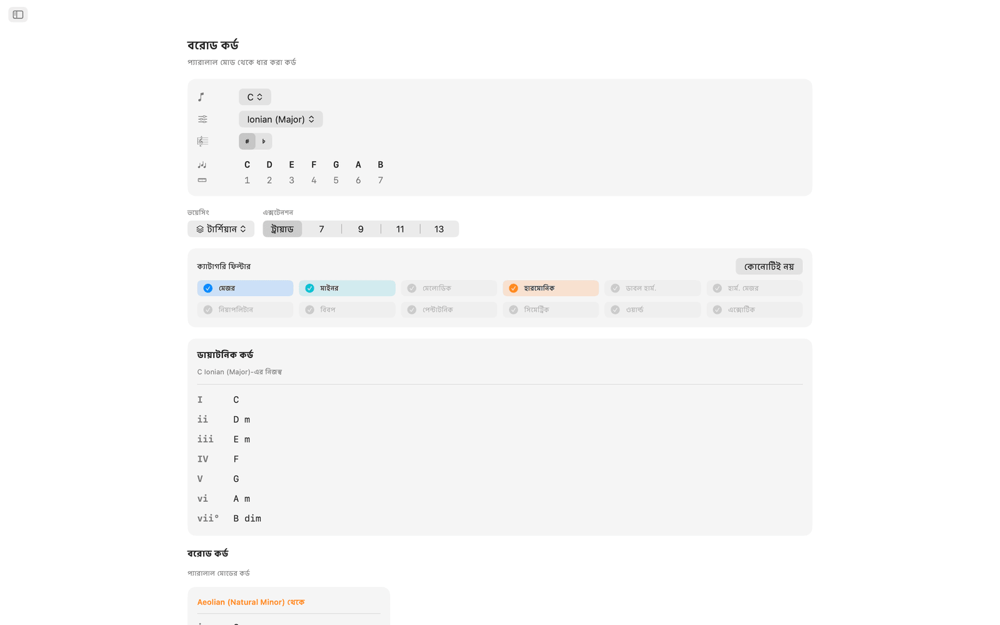
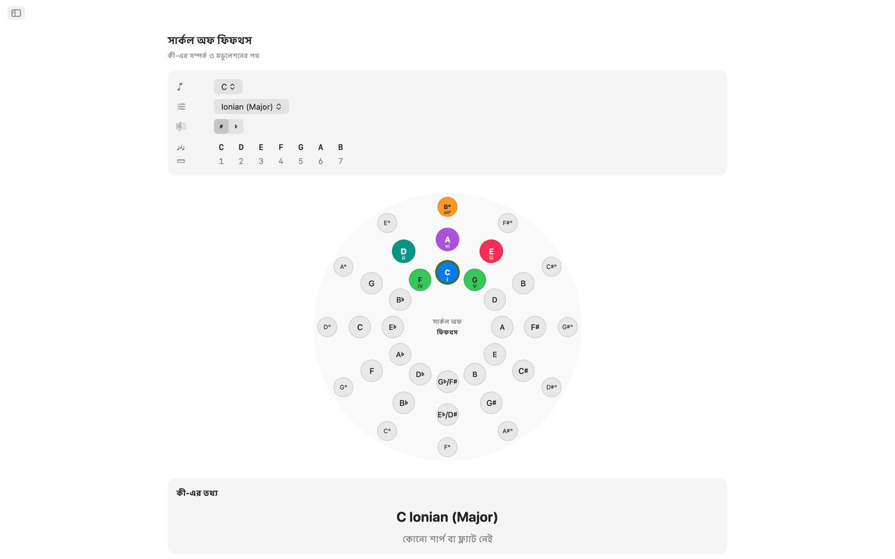
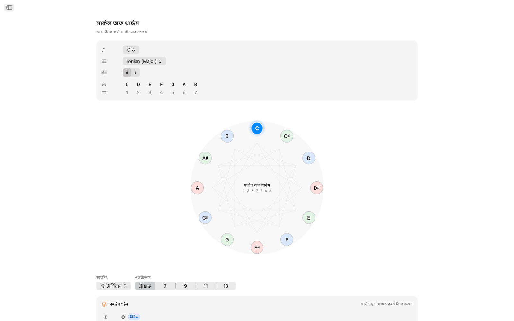
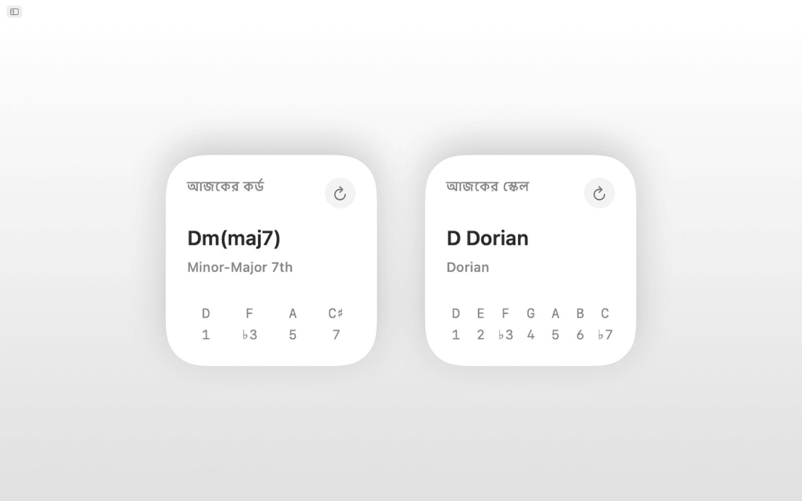
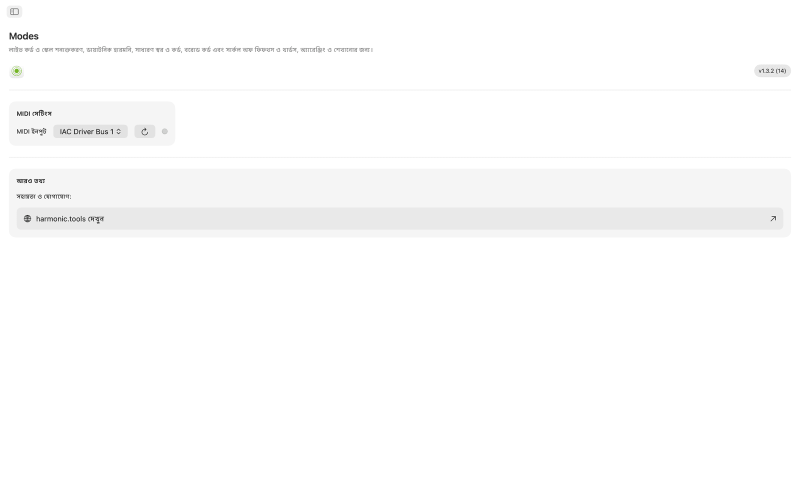

macOS-এর জন্য Modes
Modes ম্যাকের জন্য একটি মিউজিক থিওরি অ্যাপ, যেখানে আছে স্কেল, কর্ড, ভয়েসিং ও মডুলেশনের পথ। সাইডবারের এই অ্যাপ আপনার DAW-এর পাশে খোলা থাকতে পারে। Siri, শর্টকাট, স্পটলাইট সার্চ ও বিজ্ঞপ্তি কেন্দ্রের উইজেট সমর্থিত।
- MIDI ও স্ক্রিনের কীবোর্ডসহ স্কেল ও কর্ড ফাইন্ডার
- 65টি স্কেল · 21 ধরনের কর্ড · 8টি ভয়েসিং পরিবার
- সাধারণ স্বর, সাধারণ কর্ড, বরোড কর্ড
- ইন্টারঅ্যাকটিভ সার্কল অফ ফিফথস ও সার্কল অফ থার্ডস
- Siri, শর্টকাট, স্পটলাইট ও বিজ্ঞপ্তি কেন্দ্রের উইজেট
স্ক্রিনশট
লাইট ও ডার্ক স্ক্রিনশট আছে, যা ওয়েবসাইটের থিম অনুসরণ করে।












ফিচার
- ইন্টারঅ্যাকটিভ মাল্টি-সপ্তক কীবোর্ডে স্বর বাজান বা MIDI কন্ট্রোলার সংযুক্ত করুন। আপনি যে কর্ডটি বাজাচ্ছেন, Modes রিয়েল টাইমে তা শনাক্ত করে: মেজর, মাইনর, ডিমিনিশড, অগমেন্টেড, এক্সটেন্ডেড, সাসপেন্ডেড ও আরও অনেক কিছু। মিলে যাওয়া প্রতিটি স্কেল স্বরের মিল অনুযায়ী সাজানো থাকে, আর স্কেলের ধরন (ডায়াটনিক, মেলোডিক মাইনর, হারমোনিক মাইনর, পেন্টাটনিক, বিবপ, সিমেট্রিক, ওয়ার্ল্ড ও আরও) দিয়ে ফল ফিল্টার করা যায়।
- 65টি স্কেল ও মোডের মধ্যে আছে সাতটি ডায়াটনিক মোড, মেলোডিক মাইনর, হারমোনিক মাইনর, ডাবল হারমোনিক, নিয়াপলিটান, বিবপ, পেন্টাটনিক, ব্লুজ, হোল টোন, ডিমিনিশড, অগমেন্টেড এবং Hirajōshi, Kumoi, In Sen, Persian ও Enigmatic-এর মতো ওয়ার্ল্ড স্কেল। প্রতিটি স্কেল ইন্টারভাল চিহ্নসহ লেখা থাকে এবং কীবোর্ডে হাইলাইট হয়।
- যেকোনো মূল স্বর ও স্কেল বেছে নিন, দুই সপ্তক জুড়ে কী-র সব স্বর হাইলাইট হয়ে দেখা যাবে, ফলে কোন স্বর কী-র অংশ আর মূল স্বর কোথায়, তা একনজরে বোঝা যায়।
- Modes বেছে নেওয়া স্কেলের প্রতিটি ডিগ্রির জন্য ডায়াটনিক ট্রায়াড বা সেভেন্থ তৈরি করে। রোমান সংখ্যা, কর্ডের নাম, হারমোনিক ফাংশনের ব্যাজ (টনিক, সাবডমিন্যান্ট, ডমিন্যান্ট ও 30টিরও বেশি বিস্তারিত লেবেল) এবং কীবোর্ডে ভয়েসিংসহ কর্ড, সব পাশাপাশি সাজানো থাকে, তুলনা করা সহজ হয়।
- কর্ড তৈরি করা যায় টার্শিয়ান, sus2, sus4, সিক্সথ, অ্যাড, কোয়ার্টাল, কুইন্টাল ও পাওয়ার ভয়েসিংয়ে, ট্রায়াড থেকে থার্টিন্থ পর্যন্ত, আর প্রতিটি এক্সটেনশনে স্বয়ংক্রিয়ভাবে লেবেল বসে।
- সাধারণ স্বর ও সাধারণ কর্ড যেকোনো দুটি কী পাশাপাশি তুলনা করে: কোন স্বর দুটিতেই আছে, কোনটি শুধু একটিতে, আর কোন কর্ড দুই কী-তেই মেলে। মডুলেশন ও রিহারমোনাইজেশনে এটি কাজে লাগে।
- বরোড কর্ড ভিউতে আপনার কী-র নেটিভ ডায়াটনিক কর্ডের পাশাপাশি প্যারালাল মোড থেকে ধার করা প্রতিটি বিকল্প দেখা যায়, উৎস মোড অনুযায়ী সাজানো।
- সার্কল অফ ফিফথস একটি ইন্টারঅ্যাকটিভ দ্বৈত বলয় (বাইরে মেজর, ভেতরে ন্যাচারাল মাইনর)। কোনো সেক্টরে ক্লিক করলে কী বদলে যায়। ডমিন্যান্ট, সাবডমিন্যান্ট, রিলেটিভ, প্যারালাল ও কাছাকাছি কী দেখা যায়, সঙ্গে মডুলেশনের কাঠিন্যের ব্যাজ ও কী সিগনেচারের তথ্য।
- সার্কল অফ থার্ডস ডিমিনিশড-সাইকেল ডায়াগ্রামে ক্রোমাটিক মিডিয়ান্ট সম্পর্ক দেখায়। প্রতিটি পিচ ক্লাসের মেজর ও মাইনর বোতামে মিডিয়ান্ট, রিলেটিভ ও প্যারালাল সংযোগ ফুটে ওঠে, যা সিনেমাটিক ও নিও-রিমানিয়ান মডুলেশনের পরিকল্পনায় কাজে লাগে।
- যেকোনো ক্লাস-কমপ্লায়েন্ট MIDI কীবোর্ড বা কন্ট্রোলার সংযুক্ত করুন। বাজানো স্বর স্ক্রিনের ক্লিকের সঙ্গে মিলে শনাক্তকরণে যায়।
- Siri-কে বলুন বা একটি শর্টকাট চালান: কোনো স্কেলের স্বর দেখান, কোনো কী-র কর্ডের তালিকা দিন, স্কেল বা কর্ড শনাক্ত করুন, কর্ডের স্বর বলুন, দুই স্বরের মধ্যে ইন্টারভাল খুঁজুন, স্বর ট্রান্সপোজ করুন, অথবা সার্কল অফ ফিফথস ও বরোড কর্ড খুলুন। স্কেল ও কর্ড স্পটলাইটেও ইনডেক্স করা থাকে।
- আজকের স্কেল ও আজকের কর্ড উইজেট বিজ্ঞপ্তি কেন্দ্রে যোগ করা যায়।
ডেস্কটপে
- পুরোপুরি অফলাইনে চলে। অ্যাকাউন্ট, বিজ্ঞাপন বা ট্র্যাকিং নেই
- সাইডবার নেভিগেশনসহ নেটিভ macOS অ্যাপ
- ডার্ক মোড মেনে চলা ইন্টারফেস, যা সিস্টেমের অ্যাপিয়ারেন্স অনুসরণ করে
- এনহারমোনিক বানান: স্বয়ংক্রিয়, শার্প বা ফ্ল্যাট
- আকার বদলানো যায় এমন উইন্ডো। DAW-এর পাশে খোলা রাখুন
অ্যাক্সেসিবিলিটি
VoiceOver ও ভয়েস কন্ট্রোলের সঙ্গে কাজ করে, আর অ্যারো কী ও স্পেস দিয়ে কীবোর্ড থেকেও চালানো যায়।
Modes 7 দিন বিনামূল্যে ব্যবহার করে দেখা যায়। ট্রায়ালের পর পূর্ণ অ্যাক্সেস এককালীন কেনা, কোনো সাবস্ক্রিপশন নেই।
মিউজিক থিওরির পরিসর
অ্যাপে থাকা স্কেল, মোড, কর্ড, ভয়েসিং, ইন্টারভাল ও হারমোনিক টুলের রেফারেন্স, প্রতিটির পেছনের স্বর-সূত্রসহ।
স্কেল ও মোড মোট 65
প্রতিটি স্কেল ইন্টারভাল চিহ্নসহ লেখা থাকে এবং কীবোর্ড জুড়ে হাইলাইট হয়, এনহারমোনিক বানান স্বয়ংক্রিয়, শার্প বা ফ্ল্যাট রাখা যায়।
মেজর মোড (ডায়াটনিক)
| Ionian (Major) | 1 2 3 4 5 6 7 |
| Dorian | 1 2 ♭3 4 5 6 ♭7 |
| Phrygian | 1 ♭2 ♭3 4 5 ♭6 ♭7 |
| Lydian | 1 2 3 ♯4 5 6 7 |
| Mixolydian | 1 2 3 4 5 6 ♭7 |
| Aeolian (Natural Minor) | 1 2 ♭3 4 5 ♭6 ♭7 |
| Locrian | 1 ♭2 ♭3 4 ♭5 ♭6 ♭7 |
মেলোডিক মাইনর (জ্যাজ মাইনর) মোড
| Melodic Minor (Jazz Minor) | 1 2 ♭3 4 5 6 7 |
| Dorian ♭2 (Phrygian ♮6) | 1 ♭2 ♭3 4 5 6 ♭7 |
| Lydian Augmented (Lydian ♯5) | 1 2 3 ♯4 ♯5 6 7 |
| Lydian Dominant (Lydian ♭7) | 1 2 3 ♯4 5 6 ♭7 |
| Mixolydian ♭6 (Aeolian Dominant) | 1 2 3 4 5 ♭6 ♭7 |
| Locrian ♯2 (Locrian ♮2) | 1 2 ♭3 4 ♭5 ♭6 ♭7 |
| Altered (Super-Locrian) | 1 ♭2 ♭3 ♭4 ♭5 ♭6 ♭7 |
হারমোনিক মাইনর মোড
| Harmonic Minor | 1 2 ♭3 4 5 ♭6 7 |
| Locrian ♮6 | 1 ♭2 ♭3 4 ♭5 6 ♭7 |
| Ionian ♯5 (Augmented Major) | 1 2 3 4 ♯5 6 7 |
| Dorian ♯4 (Ukrainian Dorian) | 1 2 ♭3 ♯4 5 6 ♭7 |
| Phrygian Dominant | 1 ♭2 3 4 5 ♭6 ♭7 |
| Lydian ♯2 | 1 ♯2 3 ♯4 5 6 7 |
| Super Locrian ♭♭7 (Altered ♭♭7) | 1 ♭2 ♭3 ♭4 ♭5 ♭6 ♭♭7 |
ডাবল হারমোনিক মাইনর (হাঙ্গেরিয়ান মাইনর) মোড
| Hungarian Minor (Double Harmonic Minor) | 1 2 ♭3 ♯4 5 ♭6 7 |
| Oriental (Mode 2) | 1 ♭2 3 4 ♭5 6 ♭7 |
| Ionian ♯2 ♯5 | 1 ♯2 3 4 ♯5 6 7 |
| Locrian ♭♭3 ♭♭7 | 1 ♭2 ♭♭3 4 ♭5 ♭6 ♭♭7 |
| Double Harmonic Major | 1 ♭2 3 4 5 ♭6 7 |
| Lydian ♯2 ♯6 | 1 ♯2 3 ♯4 5 ♯6 7 |
| Ultraphrygian | 1 ♭2 ♭3 ♭4 5 ♭6 ♭♭7 |
হারমোনিক মেজর
| Harmonic Major (Ionian ♭6) | 1 2 3 4 5 ♭6 7 |
| Double Harmonic Major (Byzantine) | 1 ♭2 3 4 5 ♭6 7 |
নিয়াপলিটান মাইনর মোড
| Neapolitan Minor | 1 ♭2 ♭3 4 5 ♭6 7 |
| Lydian ♯6 | 1 2 3 ♯4 5 ♯6 7 |
| Mixolydian Augmented | 1 2 3 4 ♯5 6 ♭7 |
| Romani Minor (Aeolian ♯4) | 1 2 ♭3 ♯4 5 ♭6 ♭7 |
| Locrian Dominant | 1 ♭2 3 4 ♭5 ♭6 ♭7 |
| Ionian ♯2 | 1 ♯2 3 4 5 6 7 |
| Ultralocrian | 1 ♭2 ♭♭3 ♭4 ♭5 ♭6 ♭♭7 |
নিয়াপলিটান মেজর মোড
| Neapolitan Major | 1 ♭2 ♭3 4 5 6 7 |
| Leading Whole Tone (Lydian Augmented ♯6) | 1 2 3 ♯4 ♯5 ♯6 7 |
| Lydian Augmented Dominant | 1 2 3 ♯4 ♯5 6 ♭7 |
| Lydian Dominant ♭6 | 1 2 3 ♯4 5 ♭6 ♭7 |
| Major Locrian | 1 2 3 4 ♭5 ♭6 ♭7 |
| Half-Diminished ♭4 (Altered Dominant ♯2) | 1 2 ♭3 ♭4 ♭5 ♭6 ♭7 |
| Altered Dominant ♭♭3 | 1 ♭2 ♭♭3 ♭4 ♭5 ♭6 ♭7 |
বিবপ
| Bebop Dominant | 1 2 3 4 5 6 ♭7 7 |
| Bebop Major | 1 2 3 4 5 ♭6 6 7 |
পেন্টাটনিক ও ব্লুজ
| Pentatonic Major | 1 2 3 5 6 |
| Pentatonic Suspended (Egyptian) | 1 2 4 5 ♭7 |
| Pentatonic Blues Minor (Man Gong) | 1 ♭3 4 ♭6 ♭7 |
| Pentatonic Blues Major (Yo) | 1 2 4 5 6 |
| Pentatonic Minor | 1 ♭3 4 5 ♭7 |
| Pentatonic Japanese (In) | 1 ♭2 4 5 ♭6 |
| Blues | 1 ♭3 4 ♭5 5 ♭7 |
| Blues (Major) | 1 2 ♭3 3 5 6 |
সিমেট্রিক ও সিন্থেটিক
| Whole Tone | 1 2 3 ♯4 ♯5 ♭7 |
| Diminished (Half-Whole) | 1 ♭2 ♭3 3 ♭5 5 6 ♭7 |
| Diminished (Whole-Half) | 1 2 ♭3 4 ♭5 ♭6 6 7 |
| Augmented (Hexatonic) | 1 ♭3 3 5 ♯5 7 |
| Prometheus (Mystic Hexatonic) | 1 2 3 ♯4 6 ♭7 |
জাপানি পেন্টাটনিক
| Hirajōshi | 1 2 ♭3 5 ♭6 |
| Kumoi | 1 2 ♭3 5 6 |
| In Sen | 1 ♭2 4 5 ♭7 |
| Iwato | 1 ♭2 4 ♭5 ♭7 |
ওয়ার্ল্ড ও অন্যান্য
| Persian | 1 ♭2 3 4 ♭5 ♭6 7 |
| Enigmatic | 1 ♭2 3 ♯4 ♯5 ♯6 7 |
কর্ড
শনাক্ত হওয়া কর্ডের ধরন 21
আপনার বাজানো স্বর থেকে কর্ড শনাক্ত হয়, আর 9th, 11th ও 13th টেনশন স্বয়ংক্রিয়ভাবে যুক্ত হয় (7th না থাকলে add9, add11, add13 হিসেবে দেখানো হয়)। সবচেয়ে নিচের স্বর কর্ডের নিচে থাকলে তাকে বেস স্বর ধরা হয় এবং স্ল্যাশ কর্ড হিসেবে দেখানো হয় (যেমন C/E)।
| কর্ড | চিহ্ন | ইন্টারভাল |
|---|---|---|
| Major | — | 1 3 5 |
| Minor | m | 1 ♭3 5 |
| Diminished | dim | 1 ♭3 ♭5 |
| Augmented | aug | 1 3 ♯5 |
| Suspended 2nd | sus2 | 1 2 5 |
| Suspended 4th | sus4 | 1 4 5 |
| Power Chord | 5 | 1 5 |
| Major 6th | 6 | 1 3 5 6 |
| Minor 6th | m6 | 1 ♭3 5 6 |
| Dominant 7th | 7 | 1 3 5 ♭7 |
| Major 7th | maj7 | 1 3 5 7 |
| Minor 7th | m7 | 1 ♭3 5 ♭7 |
| Half-Diminished 7th | m7♭5 | 1 ♭3 ♭5 ♭7 |
| Diminished 7th | dim7 | 1 ♭3 ♭5 ♭♭7 |
| Minor-Major 7th | m(maj7) | 1 ♭3 5 7 |
| Augmented 7th | aug7 | 1 3 ♯5 ♭7 |
| Augmented Major 7th | aug(maj7) | 1 3 ♯5 7 |
| Major (♭5) | (♭5) | 1 3 ♭5 |
| Diminished (♭♭3) | dim(♭♭3) | 1 ♭♭3 ♭5 |
| Dominant 7sus4 | 7sus4 | 1 4 5 ♭7 |
| Dominant 7sus2 | 7sus2 | 1 2 5 ♭7 |
কর্ডের গুণ (বিল্ডার) 6
কর্ড বিল্ডারে গুণের বিকল্প, প্রতিটির সঙ্গে তার রোমান সংখ্যার বিশ্লেষণ।
| গুণ | চিহ্ন | রোমান সংখ্যা |
|---|---|---|
| Major | — | Uppercase (I, IV, V…) |
| Minor | m | Lowercase (ii, iii, vi…) |
| Diminished | ° | Lowercase + ° (vii°) |
| Augmented | + | Uppercase + + (III+) |
| Major (♭5) | (♭5) | Uppercase + (♭5) |
| Diminished (♭♭3) | °(♭♭3) | Lowercase + °(♭♭3) |
কর্ড ভয়েসিং 8 ধরন
প্রতিটি কর্ড আট ভাবে ভয়েসিং করা যায়, থার্ড সাজানো টার্শিয়ান ভয়েসিং থেকে কোয়ার্টাল ও কুইন্টাল স্ট্যাক পর্যন্ত।
| ভয়েসিং | আকার | বর্ণনা |
|---|---|---|
| Tertian | Triad, 7th, 9th, 11th, 13th | Standard stacked-thirds voicings |
| sus2 | Triad, 7th | Replaces the 3rd with the 2nd |
| sus4 | Triad, 7th | Replaces the 3rd with the 4th |
| 6th | 6th, 6/9 | Adds the 6th (and optionally 9th) |
| Add | add9, add11 | Adds a tone without the 7th |
| Quartal | 3-note, 4-note | Built in stacked 4ths |
| Quintal | 3-note, 4-note | Built in stacked 5ths |
| Power | 2-note | Root + 5th only |
কর্ডের আকার
| আকার | লেবেল | স্বর |
|---|---|---|
| Power | 5 | 2 |
| Triad | Triad | 3 |
| Sixth | 6 | 4 |
| Six-Nine | 6/9 | 5 |
| Seventh | 7 | 4 |
| Ninth | 9 | 5 |
| Eleventh | 11 | 6 |
| Thirteenth | 13 | 7 |
| Add 9 | add9 | 4 |
| Add 11 | add11 | 4 |
| Quartal 4-note | 4×4 | 4 |
| Quintal 4-note | 5×4 | 4 |
ইন্টারভাল 12 ক্রোমাটিক
প্রতিটি ক্রোমাটিক ইন্টারভাল তার ইনভার্শনসহ।
| সেমিটোন | ইন্টারভাল | ইনভার্শন |
|---|---|---|
| 0 | Unison | Octave |
| 1 | Minor 2nd | Major 7th |
| 2 | Major 2nd | Minor 7th |
| 3 | Minor 3rd | Major 6th |
| 4 | Major 3rd | Minor 6th |
| 5 | Perfect 4th | Perfect 5th |
| 6 | Tritone | Tritone |
| 7 | Perfect 5th | Perfect 4th |
| 8 | Minor 6th | Major 3rd |
| 9 | Major 6th | Minor 3rd |
| 10 | Minor 7th | Major 2nd |
| 11 | Major 7th | Minor 2nd |
হারমোনিক বিশ্লেষণ 31টি ফাংশন লেবেল
ডায়াটনিক কর্ডকে তিনটি ফাংশনাল পরিবারে ভাগ করা হয়।
টনিক পরিবার
সাবডমিন্যান্ট পরিবার
ডমিন্যান্ট পরিবার
কী
12টি ক্রোমাটিক কী-ই শার্প ও ফ্ল্যাট দুই বানানে আছে। এনহারমোনিক বানান স্বয়ংক্রিয় (প্রসঙ্গ অনুযায়ী), শার্প বা ফ্ল্যাট রাখা যায়।
শার্প কী
ফ্ল্যাট কী
সার্কল অফ ফিফথস
প্রতিটি কী-র সম্পর্কিত কী-র তথ্যসহ সার্কল অফ ফিফথস নেভিগেশন।
C → G → D → A → E → B → F♯/G♭ → D♭ → A♭ → E♭ → B♭ → F → C
প্রতিটি কী-তে রিলেটিভ মাইনর/মেজর, প্যারালাল মেজর/মাইনর, ডমিন্যান্ট, সাবডমিন্যান্ট, সুপারটনিক ও মিডিয়ান্ট সম্পর্ক দেখা যায়, সঙ্গে মডুলেশনের কাঠিন্যের ব্যাজ ও কী সিগনেচারের তথ্য।
সার্কল অফ থার্ডস
পিচগুলোকে মেজর ও মাইনর থার্ডের পর্যায়ক্রমে (4-3-4-3 সেমিটোন) 24 স্বরের পুনরাবৃত্ত ক্রমে সাজায় (12টি মেজর + 12টি মাইনর অবস্থান): ট্রায়াড ও 7th কর্ড কীভাবে স্তরে স্তরে গড়ে ওঠে তা বুঝতে কাজে লাগে।
- স্বরগুলো 1-3-5-7-2-4-6 ক্রমে আসে (যেমন C-E-G-B-D-F-A), কর্ডের স্বর যে ক্রমে স্তরে স্তরে সাজে।
- DFACEGB স্মৃতিসূত্র ফ্ল্যাট, ন্যাচারাল ও শার্প কী-পরিবার জুড়ে ডায়াটনিক থার্ডগুলো ধরে।
- এটি চারটি করে অবস্থানের তিনটি ডিমিনিশড-7th সাইকেল দিয়ে তৈরি।
- এটি কোলট্রেন চেঞ্জেস ও ক্রোমাটিক মিডিয়ান্ট সম্পর্কে প্রযোজ্য।
বরোড কর্ড (মোডাল ইন্টারচেঞ্জ)
যেকোনো কী-র জন্য অ্যাপ ডায়াটনিক কর্ড এবং প্যারালাল মোড থেকে ধার করা কর্ড, দুটোই তালিকাভুক্ত করে, প্রতিটিতে পরিবর্তিত রোমান সংখ্যা ও প্রচলিত ব্যবহারের বর্ণনা থাকে।
স্কেল অনুযায়ী ধার নেওয়ার উৎস
| বর্তমান স্কেল | ধার নেওয়ার প্রচলিত উৎস |
|---|---|
| Ionian (Major) | Aeolian, Dorian, Phrygian, Mixolydian, Harmonic Minor, Melodic Minor, Lydian |
| Aeolian (Natural Minor) | Ionian, Mixolydian, Dorian, Harmonic Minor, Phrygian Dominant |
| Dorian | Ionian, Aeolian, Mixolydian, Harmonic Minor |
| Phrygian | Aeolian, Harmonic Minor, Phrygian Dominant, Ionian |
| Lydian | Ionian, Aeolian, Mixolydian |
| Mixolydian | Ionian, Aeolian, Dorian |
| Locrian | Aeolian, Phrygian, Harmonic Minor |
| Harmonic Minor | Aeolian, Ionian, Melodic Minor |
| Melodic Minor | Harmonic Minor, Aeolian, Ionian |
| Phrygian Dominant | Harmonic Minor, Aeolian, Phrygian |
| Other scales | Ionian, Aeolian (basic major/minor borrowing) |
মেজরে ধার নেওয়া প্রচলিত কর্ড
| কর্ড | উৎস | সাধারণ ব্যবহার |
|---|---|---|
| iv | Aeolian / Harmonic Minor | Most common borrowed chord: melancholy subdominant |
| ♭VI | Aeolian | Pop/rock deceptive resolution |
| ♭VII | Mixolydian / Aeolian | Rock/blues cadence (subtonic) |
| ♭III | Aeolian | Mediant shift between parallel major/minor |
| i | Aeolian | Minor tonic colour |
| ii° | Aeolian | Darker predominant using ♭6 |
| vii°7 | Harmonic Minor | Fully diminished, strong resolution to I |
| ♭VI+ | Harmonic Minor | Augmented chromatic voice leading |
| ♭II (Neapolitan) | Phrygian | Dramatic pre-dominant |
| II | Dorian | Major supertonic, secondary-dominant feel |